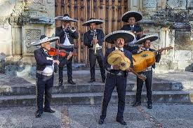
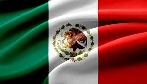
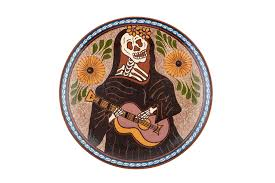
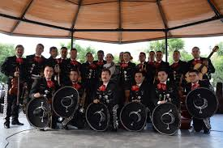

Cultura popular y moderna
Conjunto de manifestaciones culturales contemporáneas, ligadas al entretenimiento, la vida cotidiana y los medios de comunicación. Incluye expresiones como el cine, la música actual, la televisión, los deportes, la moda y los eventos masivos. Representa la manera en que la sociedad mexicana se expresa en el mundo moderno, mezclando lo tradicional con lo global.
Incluye la música popular y moderna, que abarca desde lo tradicional adaptado al presente hasta géneros urbanos y comerciales.
Se refleja también en los deportes, especialmente aquellos con gran impacto social y mediático.
Engloba además moda, medios y cultura digital, que influyen en la vida diaria.




El cine ha sido un vehículo de identidad cultural y de proyección internacional. La Época de Oro (1936-1959) consolidó símbolos nacionales como el charro o la mujer fuerte. En la actualidad, directores mexicanos han ganado premios Oscar y han dado al cine mexicano prestigio global, mostrando realidades sociales, tradiciones y problemas contemporáneos.
La música moderna mexicana combina tradición e innovación. Por un lado, el regional mexicano mantiene viva la raíz popular; por otro, géneros urbanos como el reguetón o fusiones con pop y rock reflejan la influencia global. Estas expresiones llegan a millones gracias a plataformas digitales, consolidando una identidad cultural que dialoga con lo internacional.
El fútbol es el deporte más popular y un fenómeno cultural que une comunidades en torno a equipos y selecciones nacionales. La lucha libre, con sus máscaras y personajes, es un espectáculo que mezcla deporte y teatro, representando la eterna lucha entre el bien y el mal. El boxeo ha dado figuras internacionales como Julio César Chávez o Saúl “Canelo” Álvarez, íconos de esfuerzo y orgullo nacional.
Las telenovelas mexicanas han sido reconocidas en toda Latinoamérica y forman parte del imaginario colectivo. Hoy en día, los influencers y creadores digitales marcan tendencias y son nuevos portadores de la cultura popular. La moda urbana refleja la juventud mexicana y su capacidad de apropiarse de estilos globales sin perder lo local.
Cine mexicano – Época de Oro (Pedro Infante, María Félix), cine contemporáneo (Guillermo del Toro, Alfonso Cuarón, Alejandro González Iñárritu).
Rock en español (Caifanes, Café Tacuba), pop (Luis Miguel), regional mexicano (Banda MS, Pepe Aguilar), reguetón y fusiones actuales.
Fútbol, lucha libre, boxeo.
Telenovelas, influencers, moda urbana, redes sociales.